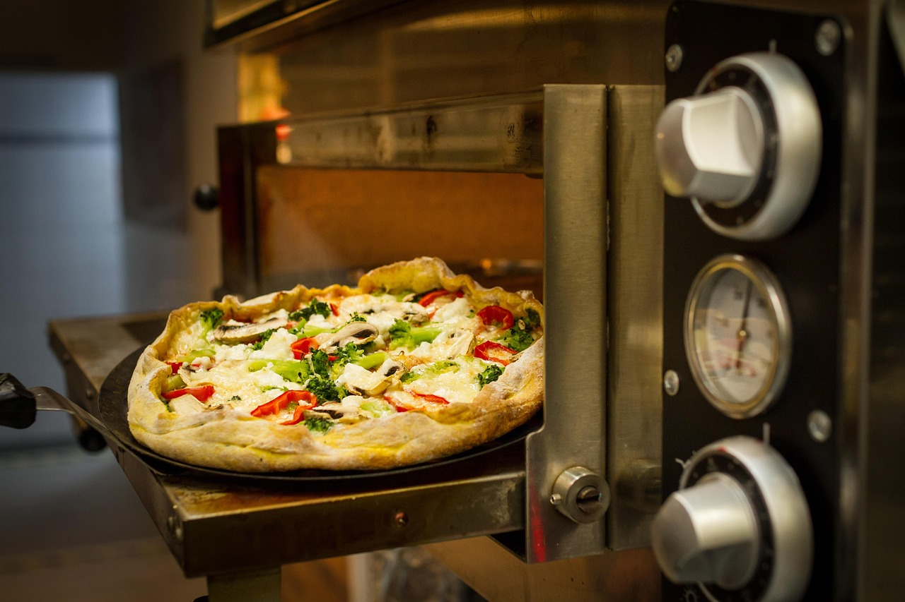

Classic Oven-Baked Pizza🍕

Ingredients
- Tomato sauce (base)
- Mozzarella cheese
- Sliced black olives
- Sun-dried tomatoes
- 2Feta cheese crumbles
- Fresh basil leaves
- Drizzle of olive oil after baking
Steps
- Preheat the oven to 250°C (480°F).
- Roll out the dough on a floured surface.
- Spread tomato sauce, add cheese, and toppings.
- Bake on a pizza stone or baking tray for 8–12 minutes until crust is golden and cheese melts.